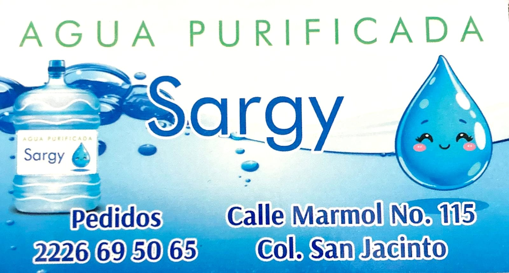
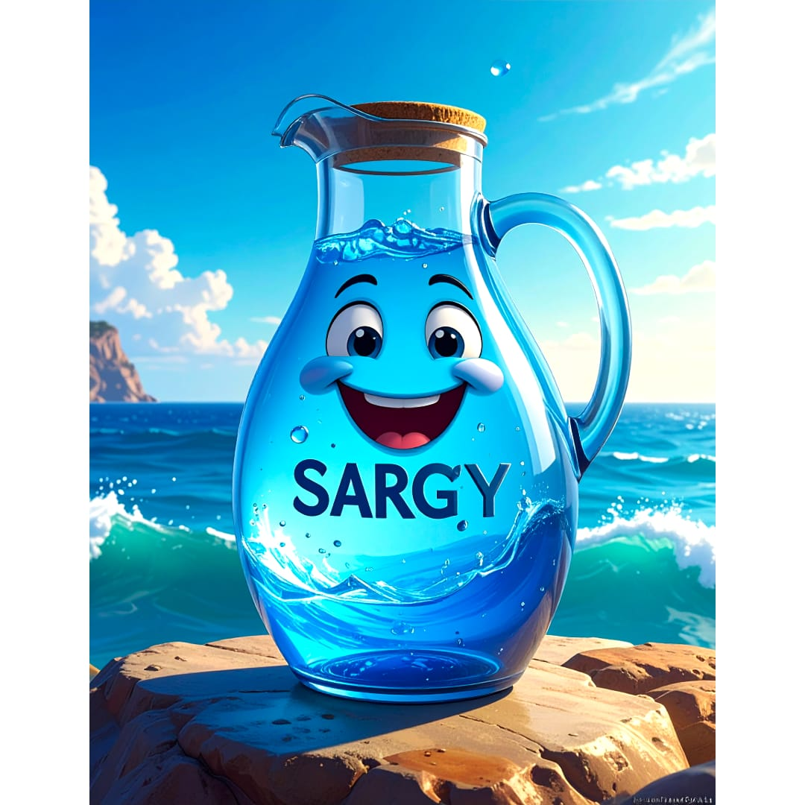
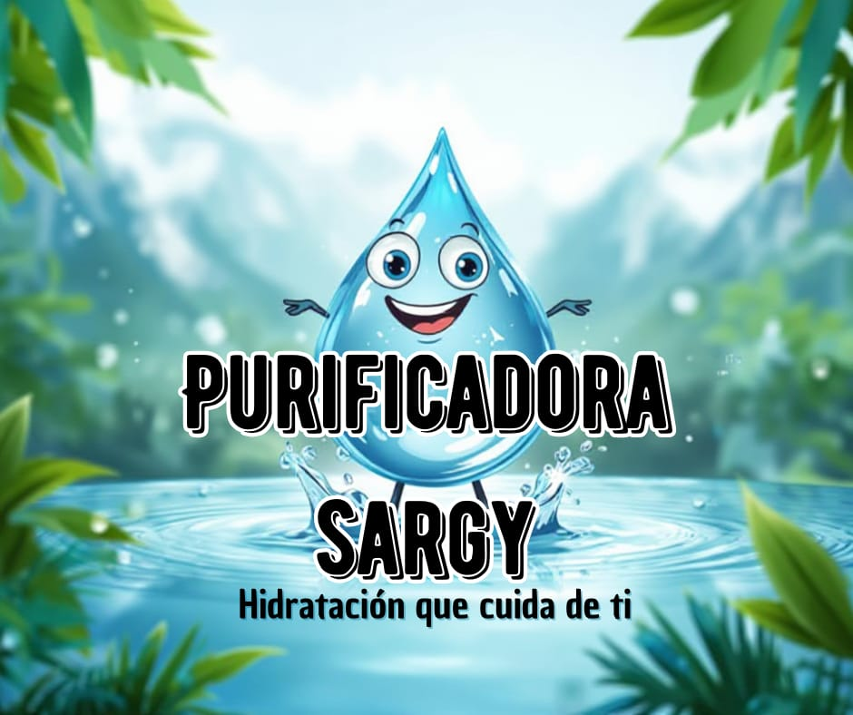

Hidratación que cuida de ti


Agua purificada lista para tu hogar con los más altos estándares.

Reparto rápido y confiable en toda la zona de Amozoc.
Procesos certificados para garantizar tu salud y bienestar.
Calle Mármol No.115, Colonia San Jacinto, Amozoc de Mota